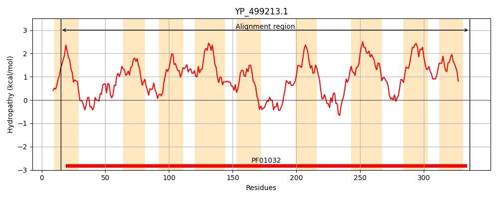
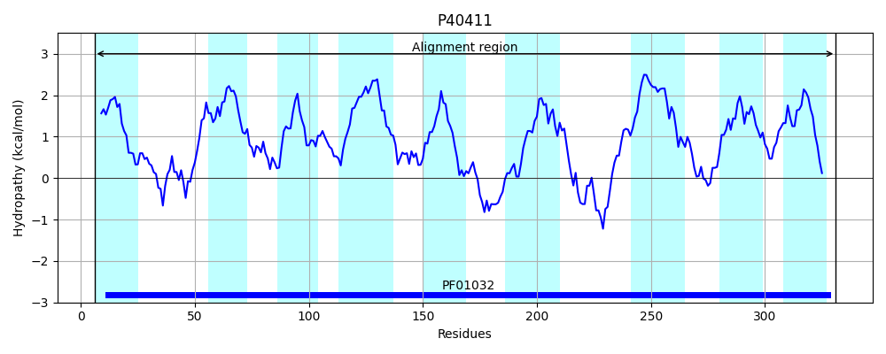
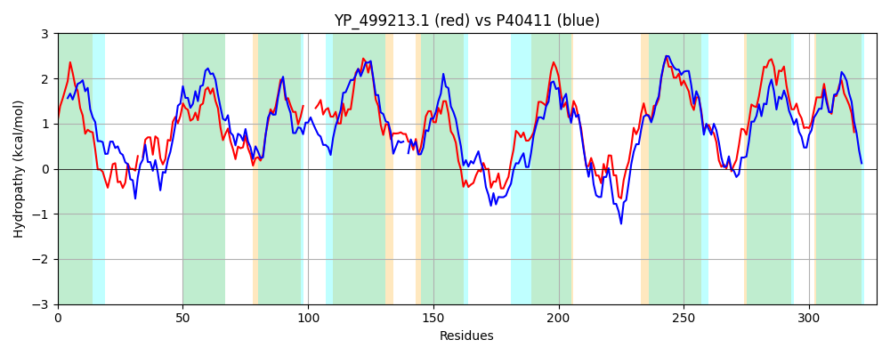

Hit Accession: P40411
Hit TCID: 3.A.1.14.15
Hit Description: gnl|BL_ORD_ID|10351 gnl|TC-DB|P40411|3.A.1.14.15 Iron-uptake system permease protein feuC - Bacillus subtilis.
Mach Len: 327
e:0.000000
Query TMS Count : 9
Hit TMS Count: 9
TMS-Overlap Score: 7.600000
Predicted Substrates:CHEBI:31432;corynebactin
BLAST Alignment:
Score: 611 , Bit scores: 239 bits, E-value: 2.8e-77, Alignment length: 327, Percentage identity: 36
Query: 15 AVFSILLFLGCTWSITSGEYNIPVERFFKTLIG-QGDAIDELILLDFRLPRMMITILAGAALSISGAIVQSVTKNPIAEPGILGINAGGGFAIALFIAI----GKINADNFVYVLPLISILGGITTALIIFIFSFNKNEGVTPASMVLIGVGLQTALYGGSITIMSKFDDKQSDFIAAWFAGNIWGDEWPFVIAFLPWVLIIIPYLLFKSNTLNIIHTGDNIARGLGVRLSRERLILFFIAVMLSSAAVAVAGSISFIGLMGPHIAKRIVGPRHQLFLPIAILVGACLLVIADTIGKIVLQPGGVPAGIVVAIIGAPYFLYLMYKTK 336
A+F L+ + +S+TSG +++ TL + E++L D RLPR+++ + G L I+GA++Q++T+N +A+PGILGINAG G I F+ + ++ + +PL ++GG+ A++I+IF++++ + ++L+G+ + + S+ + K D + W G+IW W ++ A LPW+L+ IP L+ KS L+ I ++ R LG+ ++E+ IL V + SA V+VAGS++F+GL+ PHI++R+ G H+ LP++ L+G L++ AD GK+ QP VPAGI++AI+G PYFLYL++K K
Sbjct: 6 ALFIALILVVSYFSLTSGSFSVRPAELLSTLFQIDPNPQYEILLFDLRLPRVVMAAIIGLGLGIAGAVIQAITRNGLADPGILGINAGAGAGIVAFMLLFQGQKEVTSIAAAMGMPLFGLIGGLIAAILIYIFAWHRGN-LDSGRIILVGIAINSGFSALSLFLSLKMDPQDYQMAMVWKNGSIWSANWTYITAVLPWMLLFIPILIGKSRLLDTIRFDEDTVRSLGISSNKEKTILLVACVAIISACVSVAGSMAFVGLIAPHISRRLAGVEHRYILPLSGLIGMLLVISADFAGKLFFQPAEVPAGIILAILGVPYFLYLLFKQK 331 | Protein Hydropathy Plots: |
|---|
|  |  |
Pairwise Alignment-Hydropathy Plot:
|
|---|
|  |